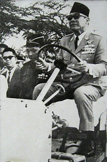

Monumen Nasional atau yang disingkat dengan Monas atau Tugu Monas adalah monumen peringatan setinggi 132 meter (433 kaki) yang terletak tepat di tengah Lapangan Medan Merdeka, Jakarta Pusat. Monas didirikan untuk mengenang perlawanan dan perjuangan rakyat Indonesia dalam merebut kemerdekaan dari pemerintahan kolonial Kekaisaran Belanda. Pembangunan dimulai pada 17 Agustus 1961 di bawah perintah presiden Soekarno dan diresmikan sehingga dibuka untuk umum pada 12 Juli 1975. Tugu ini dimahkotai lidah api yang dilapisi lembaran emas yang melambangkan semangat perjuangan yang menyala-nyala dari rakyat Indonesia. Tugu dan museum buka setiap hari mulai pukul 08:00 hingga 16:00 WIB (UTC+7) sepanjang minggu kecuali hari Senin saat tugu tutup. Sejak April 2016, monumen ini juga buka pada malam hari mulai pukul 19:00 hingga 22:00 WIB (UTC+7) pada hari Selasa hingga Jumat dan mulai pukul 19:00 hingga 00:00 WIB (UTC+7) pada hari Sabtu dan Minggu.
Sejarah
Ide awal pendirian Monumen nasional berasal dari orang biasa yang namanya tak pernah disebut-sebut atau bahkan ditorehkan dalam prasasti. Ia adalah Sarwoko Martokoesoemo. Mantan Walikota Jakarta Sudiro (1953-1960) dalam tulisannya di halaman 3 harian Kompas, Rabu, 18 Agustus 1971 dengan sangat tegas menyebutkan, ide pertama-tama pendirian Monas tidak muncul dari seorang presiden, menteri, pemimpin partai, pun tidak dari seorang walikota atau anggota DPR(D). “Yang memiliki ide pertama kali adalah seorang warga negara RI biasa, seorang swasta, warga kota sederhana dari Jakarta bernama Sarwoko Martokoesoemo,” kata Sudiro. Setelah pusat pemerintahan Negara Kesatuan Republik Indonesia kembali ke Jakarta yang sebelumnya berkedudukan di Yogyakarta pada tahun 1950, menyusul pengakuan kedaulatan Negara Kesatuan Republik Indonesia oleh pemerintahan kolonial Kekaisaran Belanda pada tahun 1949, perencanaan pembangunan sebuah Monumen Nasional yang setara dengan Menara Eiffel di lapangan tepat di depan Istana Merdeka. Pembangunan Tugu Monas bertujuan mengenang dan melestarikan perjuangan bangsa Indonesia pada masa revolusi kemerdekaan 1945, agar terus membangkitkan inspirasi dan semangat patriotisme generasi penerus bangsa. Pada tanggal 17 Agustus 1954, sebuah komite nasional dibentuk dan sayembara perancangan Monumen Nasional digelar pada tahun 1955. Terdapat 51 karya yang masuk, akan tetapi hanya satu karya yang dibuat oleh Friedrich Silaban yang memenuhi kriteria yang ditentukan komite, antara lain menggambarkan karakter bangsa Indonesia dan dapat bertahan selama berabad-abad. Sayembara kedua digelar pada tahun 1960 tetapi sekali lagi tak satupun dari 136 peserta yang memenuhi kriteria. Ketua juri kemudian meminta Silaban untuk menunjukkan rancangannya kepada Soekarno. Akan tetapi Soekarno kurang menyukai rancangan itu dan ia menginginkan monumen itu berbentuk lingga dan yoni. Silaban kemudian diminta merancang monumen dengan tema seperti itu, akan tetapi rancangan yang diajukan Silaban terlalu luar biasa sehingga biayanya sangat besar dan tidak mampu ditanggung oleh anggaran negara, terlebih kondisi ekonomi saat itu cukup buruk. Silaban menolak merancang bangunan yang lebih kecil dan menyarankan pembangunan ditunda hingga ekonomi Indonesia membaik. Soekarno kemudian meminta arsitek Soedarsono untuk melanjutkan rancangan itu. Soedarsono memasukkan angka 17, 8 dan 45 melambangkan 17 Agustus 1945 memulai Proklamasi Kemerdekaan Indonesia ke dalam rancangan monumen itu.[1][2][3] Tugu Peringatan Nasional ini kemudian dibangun di areal seluas 80 hektare. Tugu ini diarsiteki oleh Friedrich Silaban dan Soedarsono mulai dibangun 17 Agustus 1961.
Pembangunan
Pembangunan terdiri atas tiga tahap. Tahap pertama, kurun 1961/1962 - 1964/1965 dimulai dengan dimulainya secara resmi pembangunan pada tanggal 17 Agustus 1961 dengan Soekarno secara seremonial menancapkan pasak beton pertama. Total 284 pasak beton digunakan sebagai fondasi bangunan. Sebanyak 360 pasak bumi ditanamkan untuk fondasi museum sejarah nasional. Keseluruhan pemancangan fondasi rampung pada bulan Maret 1962. Dinding museum di dasar bangunan selesai pada bulan Oktober. Pembangunan obelisk kemudian dimulai dan akhirnya rampung pada bulan Agustus 1963. Pembangunan tahap kedua berlangsung pada kurun 1966 hingga 1968 akibat terjadinya Gerakan 30 September sehingga tahap ini sempat tertunda. Tahap akhir berlangsung pada tahun 1969-1976 dengan menambahkan diorama pada museum sejarah. Meskipun pembangunan telah rampung, masalah masih saja terjadi, antara lain kebocoran air yang menggenangi museum. Monumen secara resmi dibuka untuk umum dan diresmikan pada tanggal 12 Juli 1975 oleh Presiden Republik Indonesia Soeharto.[4][5] Lokasi pembangunan monumen ini dikenal dengan nama Medan Merdeka. Lapangan Monas mengalami lima kali penggantian nama yaitu Lapangan Gambir, Lapangan Ikada, Lapangan Merdeka, Lapangan Monas, dan Taman Monas. Di sekeliling tugu terdapat taman, dua buah kolam dan beberapa lapangan terbuka tempat berolahraga. Pada hari-hari libur Medan Merdeka dipenuhi pengunjung yang berekreasi menikmati pemandangan Tugu Monas dan melakukan berbagai aktivitas dalam taman.